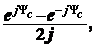
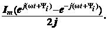

комплексно-сопряжённых чисел.
Сумма комплексно-сопряжённых чисел:
C + С* = a + jb + a − jb = 2a = 2Re|C| = 2CcosΨc или
C + С* = C(cosΨc + jsinΨc) + C(cosΨc − jsinΨc) = Се + = 2CcosΨc, откуда cosΨc =
(2.24)
т.е. косинусоидальная функция может быть представлена полусуммой двух комплексно-сопряжённых единичных векторов, имеющих фазы +Ψc и –Ψc.
Например, гармонический ток i(t)
= Imcos(ωt + Ψi) может быть представлен суммой двух комплексно-сопряжённых векторов, имеющих модуль Im/2 и вращающихся в противоположные стороны с одинаковой угловой частотой ω.
Разность комплексно-сопряжённых чисел:
С − С*
= a + jb − a + jb = 2jb = 2Im|C| = 2jCsinΨc или
С − С* = СcosΨc + jCsinΨc − CcosΨc + jCsinΨc = CеjΨc − Ce−jΨc = 2jCsinΨc, откуда sinΨc = (2.25)
т.е. синусоидальная функция может быть представлена в виде половины разности двух единичных комплексно-сопряжённых векторов, вращающихся в противоположные стороны с одинаковой угловой частотой
ω.
Если модуль комплекса С = Im, то гармонический ток
i = Imsin(ωt + Ψi) = 
Разность двух сопряжённых комплексов даёт мнимую величину, а потому её делят на j, чтобы получить действительную синусоидальную функцию.